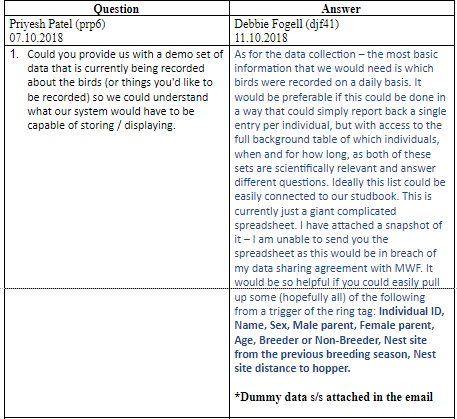
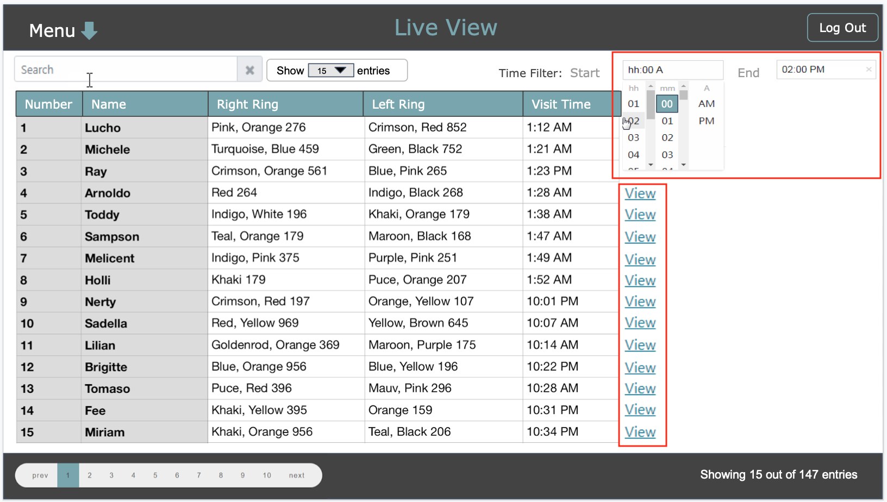
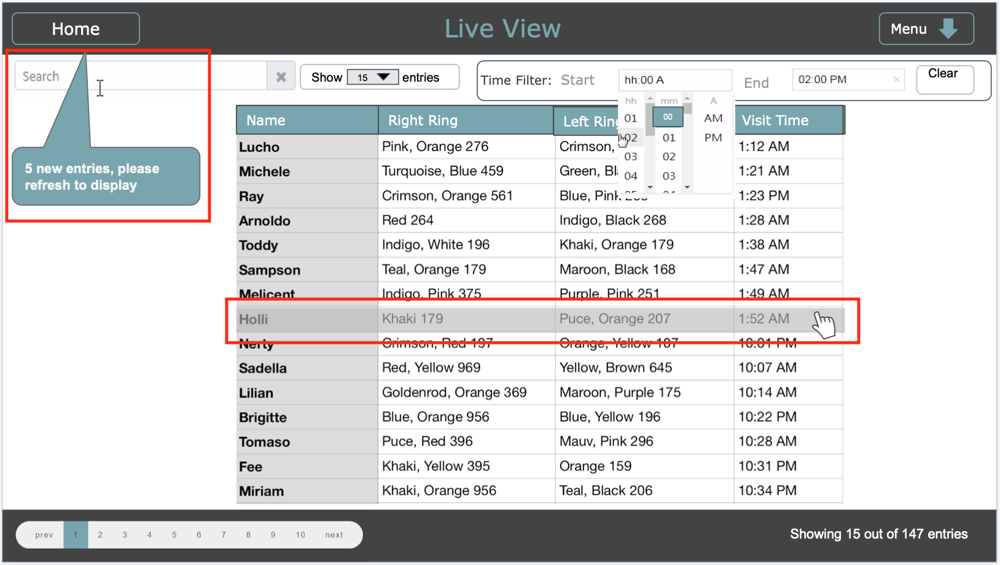
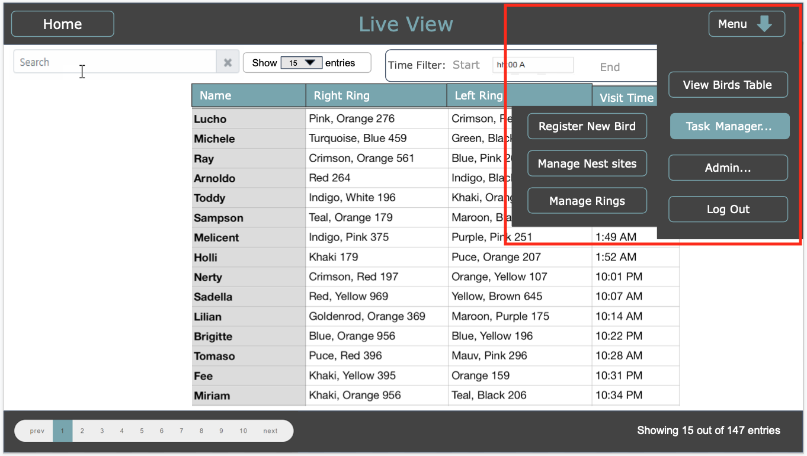
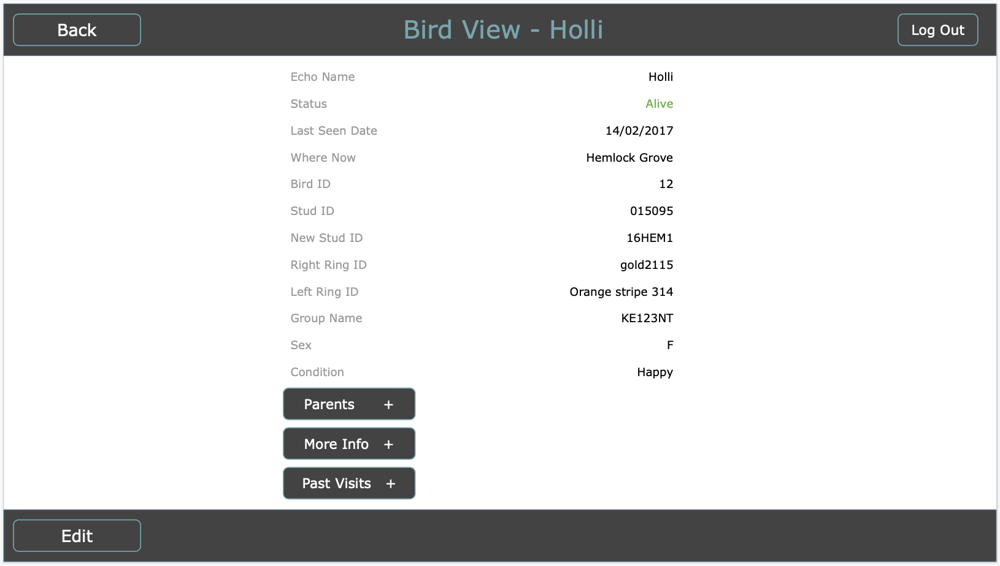
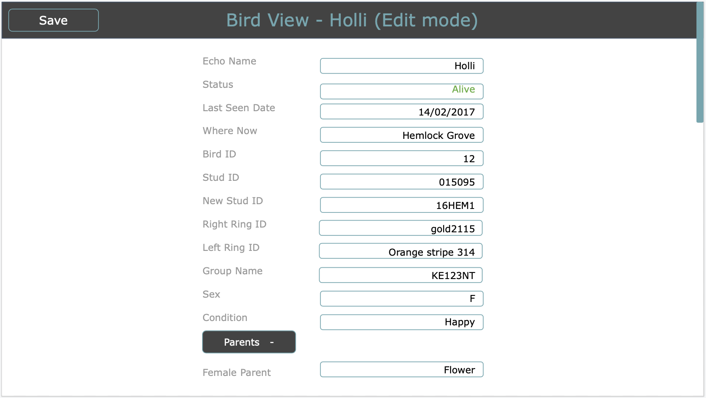
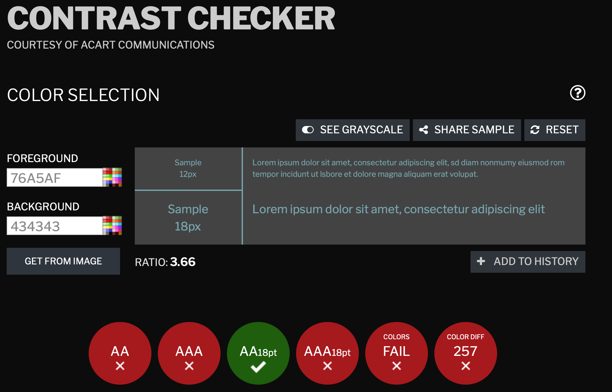
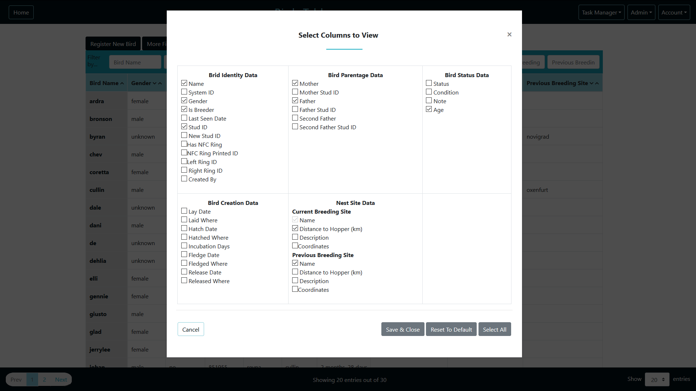

Development did not follow an ordered structure as the above phases (components were
started, "finished" and updated throughout as expected in a user-centred system), so instead this
section will just be split by system components. In
cases of components being worked on by multiple people, the actual work contributed by each member
will be discussed in it's section.
* Few BLE solutions do offer mesh network (Nordic, Qualcomm)
BLE supported hardware on Mbed
Nordic development board
Seeed Arch BLE
Used in mesh network designed to carry small amounts of data across medium distances
Low power (more than BLE)
Data rate is 250 kb/s
Range 10-100 metres
Official Mbed library
Data rate is 0.3 - 50 kb/s
Range 2-3km (urban environment)
Power consumption lower than ZigBee
Conclusion
BLE is a radio protocol meant for PAN. Good for devices that stay in close proximity to each other. It is not
ideal for devices that are separated by more than a few meters away from each other. Zigbee is a better
option for our needs. Considering
ZigBee's almost instant network join time it is more suitable for our project needs as well as its support
for large-scale automation purposes. The trade-off that had to be considered was ZigBee's higher power
consumption than BLE, however,
given our project scenario, this trade-off can be afforded.
One of the first challenges when working on requirements from the client was to understand users of the
system, what they are responsible for when working on field and how much access they are allowed to
scientifically important data
As per conversation with the client there will be 3 types of system users:
Field staff-Input Data, but not export
Coordinators-Input data and export reports
Higher Level Staff-Export Basic reports but not input or edit data
Interaction with client
Based on answers from client it was decided to build system that work on principle of least privilege (POLP).
Instead of assigning each user to particular role, each user will be granted with list of privileges based
on their role.
List of privileges:
Read (Can only view data)
Create (Can add new data into system)
Edit (Can modify existing information)
Export (Can export reports)
Admin (Has all of the above)
In addition, Admins are able to register new users, assign privileges, modify users and delete users. Admins
can delete other Admins which is needed in case people are no longer working on the research.
To get better understanding of user requirements and system functionality we have written users stories to
describe different features of the system.
System Setup
As a researcher, I can attach a tag to a bird and keep track of the tag ID, enabling me to register the
bird in the system.
As a technician, I can setup the network linking feeders and the central hub. This allows me to install
hardware and software components of the system from scratch.
System Usability
As a user, I can log into the system using my username and password
As a user, I can log out of the system locking my account. For the system to be used again, the next
user needs to enter their own username / password.
As a user with privileges to add information into the system, I can register a tagged bird in the
system. This allows the system to track the bird visits to feeders and store this data into database.
As a user with privileges to edit data, I can edit data about a bird registered in the system to update
a bird's details (such as status, condition etc.).
As a user with privileges to view data, I can view any data held about birds.
As a user with privileges to export data, I can filter the report before viewing/exporting it so that it
shows only fields I am interested in. This allows me to narrow down the dataset to only relevant
subjects.
As a user with admin privileges, I can register a new user and assign them with appropriate privileges.
This ensures that each user of the system has the minimal amount of access required to carry out their
duties without compromising additional
functionality of the system.
As a user with view privileges I want to see the most relevant data about birds first such as:
Individual ID, Name, Sex, Male parent, Female parent, Age, Breeder or Non-Breeder, Nest site from the
previous breeding season, Nest site distance
to hopper.
System Maintenance
As a technician, I can update the system with a patch issued by the development team. This allows me to
keep the system up-to-date and prevent software bugs and vulnerabilities from hampering normal
operation.
As a user with any type of privileges, I am notified if any part of the system is suspected to be
non-functional (such as a broken communications link). This allows me to detect errors faster and
recover while minimizing data loss.
As user with any type of privileges, I can restart any part the system after a power / other failure to
return it to an operational state.
New User stories based on interaction with the client
As a user with admin privileges, I can view a log of significant actions taken by other users of the
system, such as registering a bird, connecting a feeder etc. This helps me troubleshoot and identify
errors made by other team members, as
well as to detect any unusual activity.
As a user with any type of privileges I want to add list of new unassigned rings to the system.
As a user with any type of privileges I want to keep track of assigned and unassigned rings.
The Database underwent many iterations due to factors such as client input or oversight in planning and
finding we needed some extra data or we had unused fields, so in this section we will walkthrough the main
stages and the factors leading to the change. The diagrams can get a bit big and don't fit in well with the
layout so instead they will be linked so they can opened in a separate view. (Version 1 of the Diagram
was done by Afzaal Ahmad Razeem, all versions after are by Priyesh Patel.)
Version 1
For our initial design all we had to go on was the input we had from a client email when we asked for a
sample of their current data spreadsheet however due to some data sharing rules this was not possible so
instead we were sent the table headings with some dummy data. See below for the interaction:

Based off what was interpreted from the dummy data and our own understanding of what the system should be,
this version was made (click here to open diagram image).
Version 2
V2 was a small update to add some missing information (such as group name) and to include user permissions
based off of the interactions discussed in the Understanding the user section. Also the missing table
for RFID tags was added in and the unnessacary separation of user and user details was removed.
(click here to open diagram image)
Version 3
For V3 we removed the unneeded splitting of Bird, Status and Bird Creation Details. They were all one to one
relations so I just made sense to have them in one table (even though that did mean a rather large one).
(click here to open diagram image)
Version 4
V4 was mostly a tidying up of V3 but we also made a change in that the user and permissions table was
combined (following the same reasoning as Bird Table in V3) and an overlooked part of one of the client's
request was added in, which was the ability to see previous nest sites, to do this we thought it would be
necessary to add in a table for nest sites.
(click here to open diagram image)
Version 5
As we got further into development some inadequacies in the database started to show, such as a lack of
being able to properly handle historical nest sites, to counter this a new table was added called bird nest
to link a bird to a nest site along with the date it entered and left based off of client request that was
overlooked earlier on. Similarly distance to hopper was added and birdID was added in the RFID table to ease
the complexity of the Python Reader Scripts Also the feeder table was removed as the client didn't express
interest in managing specific feeding locations as we have for nest sites so instead a field with feeder ID
was added to visits.
(click here to open diagram image)
Version 6 - Final
As development ramped up in it's final stages the models in the system began to change often, at which point
it was no longer feasible to keep updating this diagram, so V6 was created retroactively at the end of
development to model the final state of the database.
We have a new lock table which was created for Karlis' concurrent access locking mechanism
there were missing fields added in to nest site for coordinates which was brought to our attention
during the first client system demo
the were missing fields added to bird which were noticed when creating the more filters and
exporting functionality
there are new user permissions added to User (isSuperAdmin) which were picked up during a client
meeting where we were demonstrating the system a second time
Due to the complexity of API mode for the ZigBee readers and the time constraint on development we
could no longer get a feeder ID so this had to be removed from visit, luckily this was a nice to
have feature for the client and not a must have, but it's a perfect candidate for future
improvement.
The first version of Lo-Fi prototype was created using myBalsamiq tool. The idea of the first prototype was
to decide on basic layout for buttons and how data will be displayed on the screen.
First list of requirements listed by client includes:
Register new birds
Register new nest sites
View database with all bird data
Create reports
Search information
Live View (This functionality was proposed by us and it was approved by client as it would be useful for
researchers to see which birds and how often are visiting feeders.)
Second version of Lo-Fi prototype and all the following versions were created using Google Slides. In second
version we have changed layout of the home screen and decided to locate all menu options to the left side as
it allows users to navigate
through the application without going back to main menu screen. Version 2 of Lo-Fi design shows 2 different
options of Live View. First option displays all data entries in a large table. This view does not include
filters and pagination and
hence is not user friendly especially when dealing with large amounts of data. In second version we have
added filters and pagination. This will enable users to easily navigate through large amounts of data,
search for information using search
bar at the top and pick specific bird visit times using time filter.
This version of UI design was created once we decided that for system development, we will be using sails.js
web application framework which supports large number of user-friendly UI features. The priority was to
concentrate on displaying data
in Live View, in Single Bird View and Bird Table view. Based on this, other parts of the system can be
constructed in the same way to create consistent UI throughout the whole system.
Live View
In order to display as much information as possible we decided to locate drop-down menu at the top of the
page in the left corner which freed up the space to display more information on the screen. More
sophisticated time filters were added in
order to find specific bird visit times. Users can search for birds by typing their name in the search box.
Pagination bar in the footer enables users to navigate through large amount of data more easily. If users
wanted to view full information
about bird that showed up on the live view they can press 'View' button at the end of the row and it would
open new view with bird information.
Live View Version 3
Live View Version 3 with Menu

This version of 'Live View' has been modified number of times. Table has been moved to centre. First column
has been removed to avoid unnecessary information on the screen as it does not serve any purpose for
researchers. Menu has been moved to
the top right corner and 'Live View' button has been added so that users can always return to live screen
from any view. 'View' button at the end of each row has been also removed as we decided that this option can
be replaced with different
functionality such as pressing on the table entry. This made Live View less cluttered from unnecessary
buttons.
We also had to decide on the ways of showing users when visits have been registered in the system. If new
visits were added automatically, it would distract users from viewing Live View, therefore system was
developed in the way that it would
inform users that new visits were registered and advice users to refresh the page.
Live View Version 4
Live View Version 4 with Menu


Single Bird View
One of the ways to view single bird information is by clicking on 'View' button from Live View screen. All
data is aligned to centre and buttons are added to expand more information about birds such as: Parent
information, More information and
table with past visits. 'Edit' button in the footer allows to edit information in this view.
Bird View
Bird View Edit Mode


Single Bird view has also been modified. Instead of arranging all data in one column, decision has been made
to display information in two columns. This enables users to see more data on the screen. 'Export' button
has been added in the footer
to export information about one bird as requested by the client, however this function has been removed at
the later stage after user testing as researcher advised that this function will not be used.
Following first UI prototype test, client agreed to chosen colour scheme for the system. However, chosen
colours failed contrast checker criteria.

To meet usability standard, colours had to be modified. As client already agreed to chosen colours scheme, we
decided to use same colours, but modify shades and brightness. Pictures below show that new colours have
passed the contrast checker
criteria.
Configuration parameters are defined in config.py (follow link to see an example with comments). Parameters are
validated in two steps - static (explicit) and dynamic (implicit).
In the static step, the following conditions must be met:
config.py exists
Required parameters defined (db_host, db_user, db_password,
db_port, db_name)
Parameters related to the database are the only required values as the service can't make reasonable default
guesses. The static step also internally sets the default values where applicable. If one of the conditions
above is not satisfied, the service
exits with a descriptive error message (eg. "Missing required config param db_name"). If a
default value is used, the service outputs a log informing the user (eg.
"Missing optional config param log_level, using default = 'WARNING'",
or
"Unknown log_level value TRACE in config, must be one of 'DEBUG' | 'INFO' | 'WARNING' | 'ERROR' | 'CRITICAL'. Using default = 'WARNING'").
The dynamic step occurs when the service attempts to use the provided parameters
to connect to the database and serial port. If either of the connections fail, the service exits with an
error message informing the user what went wrong (eg.
"Couldn't connect to database, make sure it's running and the correct connection params are set in config.py").
5.1.3 Reading RFID packets
The RFID packets are 13 bytes long and have the following structure:
Start byte (static - 1 byte)
Unused (static - 3 bytes)
Tag Data (varies - 7 bytes)
XOR checksum (varies - 1 byte)
End Byte (static - 1 byte)
0xAA
0x0F 0x08 0x00
0x03 0x84 0x12 0xDB 0xFA 0xE7 0xD5
0xB1
0xBB
Testing showed that packets are not separated from one another in the incoming serial data stream.
Therefore, a mechanism was required to deal with the possibility that a network error causes us to receive a
packet with missing, or extra, bytes. Simply
relying on start and end bytes would not be sufficient, as the tag data can also contain 0xAA
and 0xBB. Therefore, the code builds up a buffer that always starts with 0xAA, is
at least 13
bytes long, and always ends with 0xBB. This increases the chance that the buffer will contain a
valid packet and minimizes data loss by allowing for some network noise before or after the packet. This is
achieved with the following
code:
buffer = bytearray()
while True:
read = self.ser.read(1)[0] # read one byte at a time
if read == 0xBB and len(buffer) >= 12:
# we've read the end byte and the buffer is at least as big as the expected packet size,
# so parse what we have (async)
buffer.append(read)
threading.Thread(target=self.__handle_read, args=(buffer,datetime.datetime.now())).start()
buffer = bytearray()
elif len(buffer) == 0 and read != 0xAA:
# the buffer is empty but we've read something other than the start byte, so let's discard this
logging.debug("Read byte %X but expecting start byte 0xAA, discarding this read", read)
else:
buffer.append(read)
The buffer is then handled asynchronously (described in section 5.1.4) to prevent blocking
new incoming data.
5.1.4 Buffer handling
The raw buffer is handled by a function that attempts to extract a 13-byte packet that starts with the start
byte and ends with the end byte, as well as passes XOR checksum validation. If no valid packet is found, the
buffer is discarded. This is achieved
with the following code:
# tries to extract a single packet from the raw data we received
# the raw data should have at most one packet of length 13, starting with 0xAA and ending with 0xBB
# if no valid packet found in the data, return None
def __try_extract_and_validate_packet(self, incoming_bytes):
if len(incoming_bytes) < 13:
return None # this shouldn't ever happen
else:
logging.debug("Received a data buffer with 13 or more bytes, attempting to extract packet")
start_index = 0
end_index = 12
while end_index < len(incoming_bytes):
start_byte = incoming_bytes[start_index]
end_byte = incoming_bytes[end_index]
if start_byte == 0xAA and end_byte == 0xBB:
supposed_packet = incoming_bytes[start_index:end_index+1]
logging.debug("Extracted something that looks like a packet: %s, validating...",
supposed_packet.hex())
if(self.__validate_packet(supposed_packet)):
logging.debug("Validation succeeded, we've found a packet in our data")
return supposed_packet
else:
logging.debug("Validation failed, continuing search for packet")
start_index += 1
end_index += 1
# if we've reached this point, we either didn't manage to extract a packet,
# or it failed validation, so keep searching
return None
# if we've reached this point, our loop failed to extract a valid packet,
# so signal to the caller that we've failed by returning None
If a valid packet is found, it (along the date and time the buffer was received) is then
passed to the database service, described in section 5.1.5.
5.1.5 Packet Handling
The service retrieves the relevant RFID record from the database according to the payload of the packet (if
no RFID records are found, the packet is discarded). It then checks whether there have been any visits
recorded from this RFID record within the
period defined by same_visit_frequency_minutes setting in the config file. If there are, the packet is
discarded. If not, a new record is written in the visit table in the database, containing the date/time the
buffer was received, the RFID
record ID and the bird record ID (if present). The visit table is read directly by the main application to
detect and show new visits. If at any point the connection to the database is dropped, the service attempts
to reconnect up to five
times before giving up and exiting with an error message.
5.1.6 Future Improvements
Automatic serial port scanning. Currently, the person launching the service
must specify the serial port name in the configuration file. Although the service is intended to be
used only by technical users, this
can still present a challenge if the user is unfamiliar with the operating system or serial
communication in general. This wasn't included due to extensive testing required to ensure that
the automatic scanning is reliable and
does not introduce more problems that it solves.
Abstraction of the database layer. Currently, raw SQL queries are used by the
service to interact with the database. This presents possible maintenance difficulties in the future
as small errors can lead to catastrophic
consequences, and code readability is compromised. Object-relational mapping (ORM), similar to the
one used for the main system, could be used instead. This wasn't included due to an aim to keep
the service lean and reduce level
of bloat. However, the right ORM implemented correctly could offset these negatives with the
positives it brings.
Support of API mode. Currently, the service can only read data received in XBee
AT mode (AT and API modes compared in section 1.2). API mode support could be added as it allows for
greater extensibility and more
features, such as identifying when a network device has gone offline. This wasn't included due
to the increased complexity of API mode and the system requirements lacking features that could make
use of API mode.
in the early stages of development we used Sails' built-in datastore called: sails-disk. This
let us manually create entries that only existed during that run of the program. This was fine for when we
were creating simple pages
such as the login page but in the larger tests and for actual production we needed a proper database, so
around the time that live view was starting to be developed the MySQL database was created. With use of v1
of the database diagram, scripts
were made to create corresponding tables. The full script can be viewed in echoDBSetup.sql (Click to open document)
These models have a set of built-in methods that allow us to interact with the database.
If these
models are modified Sails can uses them to create new tables by running the system using
sails lift --drop to drop the old tables and create new ones. So after the first versions of
models were generated we could just update the models instead of updating the original scripts and
rerunning. Although we could have used this method of creating the model first and letting Sails create the
tables to make the original version We selected to use the script method as it was easier to verify that the
diagram was actually workable and to check if Sails handled the data types we wanted as expected.
5.2.3 Test Data
Now that the database was in place we created a set of insert statements to generate dummy data based on
input from the user on the data they currently use and based on what we knew we would need to test any edge
cases, such as a bird visiting when it hasn't been registered. These statements had to be updated whenever
the database was changed and if new cases were found that could test limits of the system. The full script
can be viewed in AiOData.sql (Click to open document).
Sails.js provides an overall page layout in which common elements can be put and the body of the page can be
injected when ran, originally the common elements included both the header and footer bars but for our
system we altered the footer on most pages so I removed this and switched it to be injected with the body.
For the actual styling Sails has Bootstrap 4 preinstalled (a vast library of front-end elements) so we used
this as a base and modified what we needed, for a proof of concept I stylized the live view page using some
quick inline CSS, this was then taken over by Afzaal who extracted CSS to their own files and tweaked, added
to and applied them globally.
5.3.2 Full System Styling - Afzaal Ahmad Razeem
5.3.2 UI Design Compliance & Client Requested Changes - All
throughout the styling process we used the latest UI Design as our reference, and for pages that weren't
fully defined we used some common sense and made sure the overall style matched the rest of the defined
pages. There are some discrepancies between UI Design and the end product due to some input we gathered from
the client during live demonstration meetings (see screenshot below), such as the buttons for adding new
records being moved above tables instead of below and some name changes.
The Birds are displayed in a simple paginated HTML table, following the design of similar pages. The Birds data for the current page is pulled from the back-end (get-bird.js)
and the table is populated using a v-for loop. When the page is loaded, instead of displaying all the information about the birds it only displays the important and frequently accessed
information which was discussed and agreed with the client.
Filtering is available on the fields using a contains-match excpet for "Gender", "Status" and "Breeder" which are made a drop down options for user to choose from instead of typing.
Filtering is done in the backend and the list of matching Birds is updated as soon as the user types or edits anything in any of the filter fields
5.6.2 More Fields

The user is able to view more data about the birds by adding extra columns to the Birds Table. By clicking "More Fields" button, the user will be presented with a
number different columns which can selected to be added to the table. If the user /.....
Rings are uploaded to the system in bulk, by the user submitting a CSV file (click link for example of valid CSV). When the user uploads a CSV file, it
is validated client-side using the
following criteria, all of which must pass:
It is comma-separated column-wise
It is newline-separated row-wise
It has exactly three columns
The first row consists of the column headers and is exactly short,long,colour
If the file fails validation, the user is presented with the following error message:
Please upload a valid file. See tooltip for help.. If the file passes validation, the user is
presented with the following success message:
File is valid, you may proceed and the 'Import' button becomes available.
When the user
presses 'import', the CSV file is parsed to a JSON object and sent to the backend
(import-rfid.js). In the backend, these
values are inserted into the database, skipping non-unique records (uniqueness is determined by either the
short ID or the long ID). When the backend has saved the new records to the database, it sends the number of
inserted and skipped records
back to the front-end, where it is presented as:
Successfully imported X rings. Y rings were skipped due to non-unique attributes (either short or long ID).
The rings are displayed in a simple paginated HTML table, following the design of similar pages. The ring
data for the current page is pulled from the back-end (get-rfid.js) and the table is populated
using a v-for loop. Filtering
is available on the printed ring ID using a contains-match. Filtering is done in the backend and the list of
matching rings is updated as soon as the user types or edits anything in the filter field.
5.8.4 Editing Rings
The user is able to delete rings that have not been assigned to a bird (assigned rings cannot be deleted
without being un-assigned first, to prevent loss of data on rings that are in active use). Rings can be
deleted by clicking on the bin icon (if the
bin cannot be displayed, it is replaced by the text 'Delete Ring'). The user is prompted for confirmation
and, if they accept, a request is sent to the backend (delete-rfid.js) to delete this ring
record from the database.
5.8.5 Future Improvements
Allow insertion of single rings. Currently rings can only be inserted via a CSV
upload. Although this is handy when inserting a large volume of records, it makes inserting single
records tedious. A manual-entry form
could be included to insert new rings into the system one-by-one. This wasn't included as the relevant use case (click on link to
view) only detailed bulk upload.
Nevertheless, from a user's perspective, manual entry could come in handy once in a while, and from
a developer's perspective, this would be a relatively simple task.
Allow ring assignment from this screen. Currently rings can only be assigned to
birds via the Bird View. It would be useful for the user to be able to also assign rings from this
screen. This functionality wasn't
considered for development as the user is already able to assign rings through other means, however
it would increase user efficiency / productivity if the task could be achieved via this screen too.
Allow user to view the bird details by clicking on the bird name. The bird names
in the 'Assigned to Bird' column could be clickable and bring up bird details. This
functionality wasn't added due to an oversight,
as such functionality already exists in similar pages, such as Live View.
Relax CSV validation. The papaparse library is quite powerful and
able to deal with CSV files in different formats, so current CSV validation is unnecessarily strict.
Some of the rules, such as column order,
could be removed altogether. This wasn't done due to security concerns about allowing the users
to upload files in various formats to the back-end. Extensive testing could alleviate these concerns
but wasn't performed due to time
constraints.
Nest sites are created to have references to locations on the site that can hold additional data about the
locations such as coordinates and description. They are used in bird records to indicate important locations
- for example, where the bird was hatched,
or where it is currently breeding.
5.9.3 Creating Nest Sites
Nest sites are created through a modal form seen in the screenshot above. The following live validation is
performed on the form to ensure data integrity:
Nestsite name must be present and unique
Distance, latitude and longitude must be either empty or valid numbers (decimal points allowed)
If an invalid value is detected, the field is highlited in red and the user isn't allowed to submit the form
until they enter valid values:
If all values are valid, the data is sent to the back-end (create-nestsite.js) where the nest
record is inserted in the database.
5.9.4 Viewing Nest Sites
The nests are displayed in a simple paginated HTML table, following the design of similar pages. The nest
data for the current page is pulled from the back-end (get-nestsite.js) and the table is
populated using a v-for loop.
5.9.5 Editing Nest Sites
The user can edit data on any nest site, except for its name. This is done by clicking on the 'Pencil' icon
in the Actions column. If the icon can't be displayed, the text 'Edit nestsite' is shown instead. The edit
screen is the same as the create screen
seen in 5.9.3, with the exception that all fields are pre-poulated with existing data and the 'Nestsite
name' field is disabled. When the user clicks 'Save', the new data is sent to the back-end
(edit-nestsite.js)
and the relevant record updated.
The user can delete any nest sites, including ones that are
assigned to birds. In this case, the nest site will be removed from the bird's record. This is done by
clicking on the 'Bin' icon in the Actions
column. If the icon can't be displayed, the text 'Delete nestsite' is shown instead. The user is prompted
for confirmation and, if they accept, a request is sent to the backend (delete-nestsite.js) to
delete this nestsite record
from the database.
5.8.6 Future Improvements
Allow breeding site assignment from this screen. Currently breeding sites can
only be assigned to birds via the Bird View. It would be useful for the user to be able to also
assign breeding sites from this screen. This functionality wasn't considered for development as
the user is already able to assign breeding sites through other means, however it would increase
user efficiency / productivity if the task could be achieved via this screen too.
Allow user to view the bird details by clicking on the bird name. The bird names
in the 'Occupied by' columns could be clickable and bring up bird details. This functionality
wasn't added due to an oversight, as
such functionality already exists in similar pages, such as Live View.
The User Activity Monitor screen, seen in section 5.11.1, shows actions taken by users that modified the
data in some way. The following actions are logged:
Create / edit bird
Create / edit / delete nestsite
Import / delete RFID ring
Create / edit / delete user
Edit your own full name / password
The logs are displayed in a simple paginated HTML table, following the design of similar pages. The logs for
the current page is pulled from the back-end (get-changelog.js) and the table is populated
using a v-for loop.
Filtering is available on username, date range, action and data (all of these, except for date, are a
contains-match). Filtering is done in the backend and the list of matching logs is updated as soon as the
user types or edits anything in any of the filter fields.
The associated data can be viewed by clicking on the 'eye' icon in the action column (if this icon can't be
displayed, the text 'View Data' is shown instead).
The user is then presented with a screen showing the data that was changed:
5.11.3 Logging actions
Actions are logged using the logActivity function (log-activity.js). The
controller of the modifying action
is responsible for the format of the data it passes to this function and adding / excluding any data (such
as passwords). The logActivity function
takes four parameters: oldData, newData, action and
user. It is responsible for removing any data that's
duplicated in oldData and newData (so only attributes different between the two are stored), converting the
data from JSON to string, and storing it in the database:
Some further formatting is done by the frontend before displaying the data, in order to improve readability,
such as removing curly brackets, extra quotes, inserting line-breaks where required.
5.11.4 Future improvements
Present the data in a more readable format.
Currently, relatively little formatting is done on the raw data used in the backend. For example, for
the most part, the
attribute names are shown how they appear in the database, rather than how they appear in the front-end
(for example, 'fledgedWhere' instead of 'Where Fledged').
This would improve readability and make it more user-friendly, as this screen is intended to be used by
both technical and non-technical users.
This wasn't done as it would require planning to prevent the codebase from becoming convulated, and it
was viewed as a relatively insignificant improvement,
so wasn't prioritised.
Add a scheduled clean-up function.
As the system is used over years, the database table of logs will grow larger and larger. Currently
there is no way to delete old data without executing manual
database queries. This doesn't affect the user experience as they are able to filter the logs by
date-range (a default date-range filter of a 1-month period is applied).
However, there is a risk that this table grows too large and starts using up database resources that
could be better used elsewhere.
This wasn't done as as pruning of old logs wasn't discussed with the user, so the feature wasn't added
to avoid introducing unexpected behaviour / causing data loss. Furthermore, it is an issue that is
highly unlikely to occur within the foreseeable future, and can easily be added at any later time even
by developers who aren't familiar with the overall system.
Account Overview is a simple screen that shows the user's full name, username, privileges and registration
date.
It also allows the user to update their full name and password.
5.12.3 Editing Account Details
The user is able to update their full name and password by using the 'Edit profile' and 'Change password'
buttons, respectively:
Live validation is done on the password field to ensure that it is at least 6 characters long, and the
password confirmation matches.
Live validation is also done on the full name field to ensure that the full name isn't empty. If validation
fails, the field is highlited in red
and the user is prevented from saving the form.
When clicking save, the data is sent to the back-end (update-password.js for password and
update-profile.js for full name),
where the relevant database record is then updated with the new data.


{kind=link}
{kind=link}
{kind=link}
{kind=link}
{kind=link}
{kind=link}